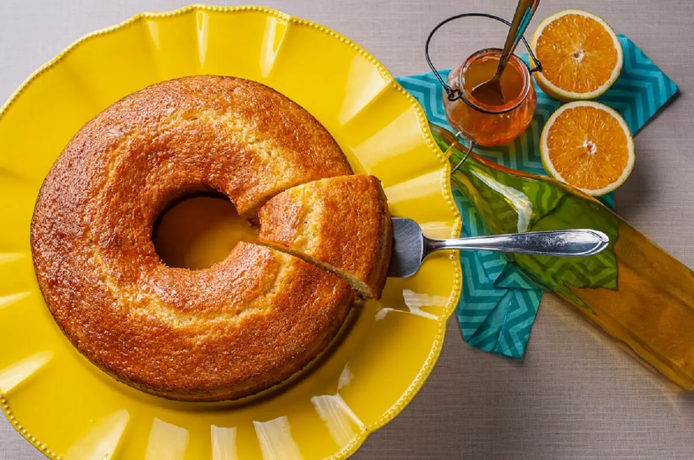

não existe caminho certo para a felicidade, mas o atalho é feito de doces
_
_
• Brownie •
Crocante por fora e macio por dentro, essa é a descrição perfeita para essa receita de Brownie, segue o link abaixo dessa delícia.
Brownie
• Torta de Limão •
Uma das sobremesas mais gostosas e fáceis que exite, uma mistura de texturas e sabores. Segue o link dessa Torta de Limão.
Torta de Limão
• Bolo de Cenoura com Calda de Chocolate •
Sabe aquele bolo de cenoura com calda de chocolate que você comia quando crinça? Aquele bolo fofinho com calda crocante de chocolate... Que nostalgia né?! Segue o link abaixo essa receita deliciosa.
Bolo de Cenoura com Calda de Chocolate
• Torta Alemã •
Uma das tortas mais saborosas e fáceis de preparar. Assim como o sabor, sua história também é muito especial. Segue o link dessa magnífica Torta Alemã.
Torta Alemã
• Mousse de Maracujá •
Cremoso, suave e azedinho, essa é a combinação perfeita para um Mousse de Maracujá perfeito! Segue abaixo o link abaixo.
Mousse de Maracujá
• Cookie •
O famoso Cookie americano, macio, saboroso... e super fácil de fazer! Bora aprender? Segue o link desse saboroso Cookie.
Cookie
• Banoffe •
Banoffe, uma das tortas mais amadas e deliciosas que exitem... Quer aprender essa receita? Clique no link abaixo!
Banoffe
• Bolo de Laranja •
Um caseirinho simples, fofinho e muito delicioso, ótimo para o café da tarde... Segue o link desse maravilhoso Bolo de Laranja!
Bolo de Laranja

• Churros •
Aquele churros crocante, macio, açucarado com gostinho de infância... Chega deu água na boca, né? Segue o link dessa receita.
Churros
<<<<<<< HEAD
• Rocambole de Doce de Leite •
Molhadinho, saboroso e com muuuito recheio... Esse é a descrição de um Rocambole perfeito, bora fazer? Segue abaixo o link dessa delícia.
Rocambole de Doce de Leite
=======
• Rocambole de Doce de Leite •
Molhadinho, saboroso e com muuuito recheio... Esse é a descrição de um Rocambole perfeito, bora fazer? Segue abaixo o link dessa delícia.
Rocambole de Doce de Leite
>>>>>>> d21a49e19666a7be6d68be911e4d3366d76ea75d
_